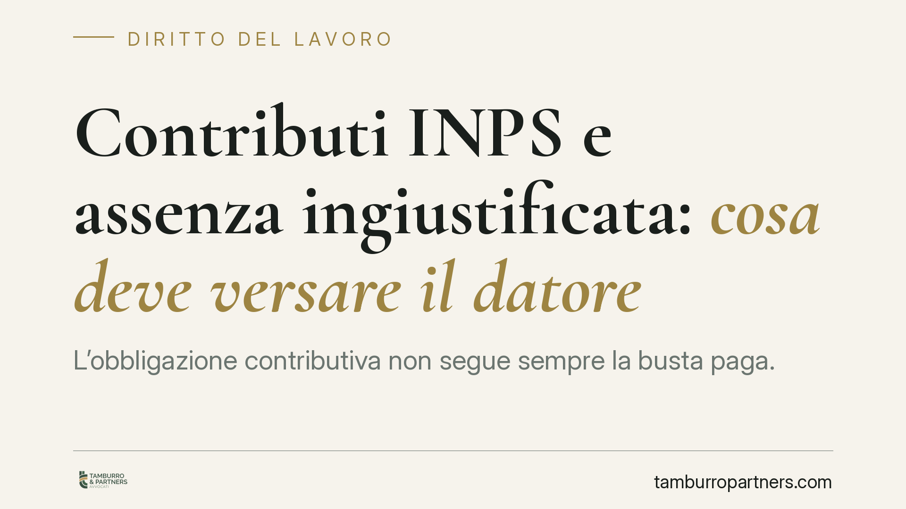

Contributi INPS e assenza ingiustificata: cosa deve versare il datore
L'obbligazione contributiva non segue sempre la busta paga. Quando il lavoratore si assenta senza giustificazione e perde il diritto alla retribuzione, il datore si chiede cosa debba ancora versare all'INPS. Il nodo è l'autonomia del rapporto contributivo rispetto a quello retributivo, con un punto delicato sul minimale ex art. 1 D.L. 338/1989. Vediamo cosa conviene fare.

Il caso
Un dipendente si assenta per più giorni senza giustificazione. Il datore sospende la retribuzione per quelle giornate: nessun lavoro reso, nessun titolo che imponga il pagamento, nessuna somma dovuta. Fin qui il piano retributivo è lineare.
Il dubbio sorge sul piano contributivo. L'INPS può pretendere comunque i contributi? E su quale base di calcolo, se lo stipendio per quei giorni non è stato corrisposto?
La risposta non è intuitiva, perché il rapporto retributivo e il rapporto contributivo viaggiano su binari distinti. Il primo lega datore e lavoratore; il secondo lega datore e ente previdenziale. Il fatto che manchi il pagamento non estingue automaticamente l'obbligo verso l'INPS.
Inquadramento normativo
Il riferimento cardine è l'art. 1 del D.L. 25 marzo 1989, n. 338 (convertito dalla L. 7 agosto 1989, n. 389). La norma fissa il principio del minimale contributivo: la retribuzione imponibile ai fini del versamento non può essere inferiore all'importo delle retribuzioni stabilite da legge, regolamenti, contratti collettivi o accordi individuali, se migliorativi.
In altri termini, i contributi non si calcolano su ciò che il datore effettivamente paga, ma su ciò che è dovuto in base al contratto collettivo applicabile. È questo l'ancoraggio dell'orientamento di legittimità sull'autonomia dell'obbligazione contributiva: la Cassazione, in modo consolidato, afferma che l'obbligo verso l'INPS sorge e si determina in funzione della retribuzione dovuta, non di quella corrisposta (principio ricavabile, tra l'altro, dall'interpretazione dell'art. 1 cit. e dall'art. 12 della L. 153/1969 sulla nozione di retribuzione imponibile).
Sul versante opposto va richiamato il massimale annuo della base contributiva e pensionabile, previsto dall'art. 2, comma 18, della L. 8 agosto 1995, n. 335, per i soggetti iscritti dopo il 31 dicembre 1995: un tetto che opera all'estremo superiore della base di calcolo.
Il nodo giuridico: assenza ingiustificata e base imponibile
Qui occorre cautela, perché il punto è più controverso di quanto appaia.
Da un lato, una lettura valorizza la riduzione proporzionale della base imponibile: se per alcune giornate non matura alcuna retribuzione né alcun titolo, la base su cui applicare il minimale si ridurrebbe in proporzione alle giornate effettivamente retribuibili.
Dall'altro, l'orientamento che àncora la contribuzione alla retribuzione dovuta contrattualmente spinge verso la conservazione dell'obbligo sul minimale, salvo che il rapporto risulti validamente sospeso.
La differenza decisiva è proprio questa: l'assenza ingiustificata non è una sospensione del rapporto di lavoro. Il vincolo contrattuale resta pienamente in essere. Diverso è il caso delle assenze con titolo (ferie, permessi retribuiti, festività), dove la retribuzione è dovuta e la contribuzione segue senza incertezze.
Per questo il trattamento concreto dell'assenza ingiustificata può variare in funzione del CCNL applicabile e della prassi INPS di riferimento. Non esiste una regola unica valida a prescindere dal contratto collettivo e dalla disciplina specifica del settore.
Implicazioni pratiche per il datore
Per l'impresa il rischio concreto è duplice: sottostimare la base imponibile e incorrere in recuperi contributivi, sanzioni e interessi; oppure, all'opposto, versare su una base superiore al dovuto.
La valutazione va fatta caso per caso, incrociando tre elementi: la qualificazione dell'assenza (ingiustificata, sospensione, assenza con titolo), le previsioni del CCNL e gli orientamenti applicativi dell'ente. Un automatismo gestionale, applicato senza questa verifica, è la principale fonte di contenzioso previdenziale.
Cosa fare in concreto
- Qualifica correttamente l'assenza. Distingui tra assenza ingiustificata, sospensione del rapporto e assenza con titolo retributivo (ferie, permessi, festività): il trattamento contributivo cambia.
- Verifica il CCNL applicabile. Controlla la disciplina specifica su retribuzione dovuta e minimale di settore prima di impostare il cedolino.
- Non confondere mancato pagamento ed estinzione dell'obbligo. Ricorda che la contribuzione si àncora alla retribuzione dovuta, non a quella materialmente erogata.
- Documenta l'assenza. Conserva comunicazioni, contestazioni disciplinari e tracciabilità delle presenze, utili in caso di verifica ispettiva.
- Richiedi una verifica tecnica mirata sul singolo caso prima di procedere a versamenti o a rettifiche, soprattutto in presenza di periodi ricorrenti di assenza.
Conclusione
Il principio di autonomia dell'obbligazione contributiva impone di ragionare sul dovuto, non sul pagato. Sull'assenza ingiustificata, però, la risposta dipende dalla qualificazione del periodo e dal contratto collettivo: una valutazione preliminare, documentata, resta la scelta più prudente.
---
*Contributo informativo a cura di Tamburro & Partners - Avv. Giuseppe Tamburro. Non costituisce parere legale.*
Ogni storia di lavoro ha i suoi tempi.
Se gestisci HR e vuoi un confronto su contenzioso, ispezioni o licenziamenti, scrivi allo studio. Ti rispondiamo entro un giorno lavorativo.